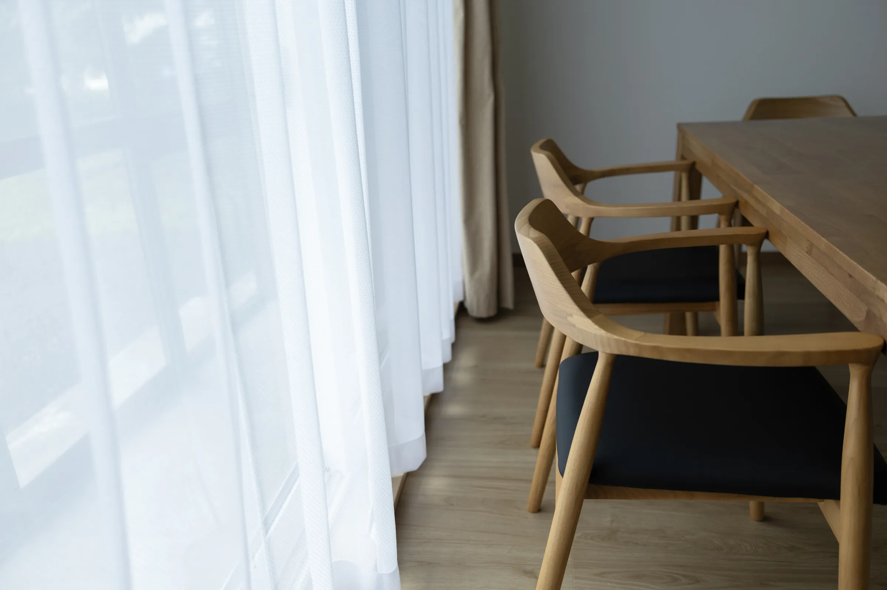

Works 01｜Space・Brand・Web｜2026
UBAKU Villa 宇莫別荘
元農家住宅を、1日1組の一棟貸しの宿へ。
1968年築、半世紀を超えて受け継がれてきた元農家住宅を改修。空間のデザイン監修から、ブランディング（ビジュアルデザイン・Webデザイン）までを、ひとつの世界観でそろえました。
- 改修のデザイン監修
- 家具・照明の選定
- ロゴ
- カラー
- メッセージカード
- 宿泊のご案内
- Webサイト